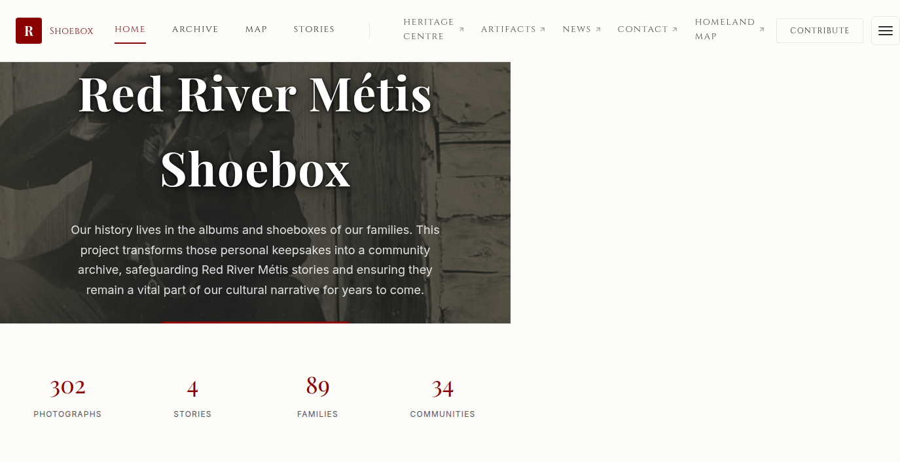
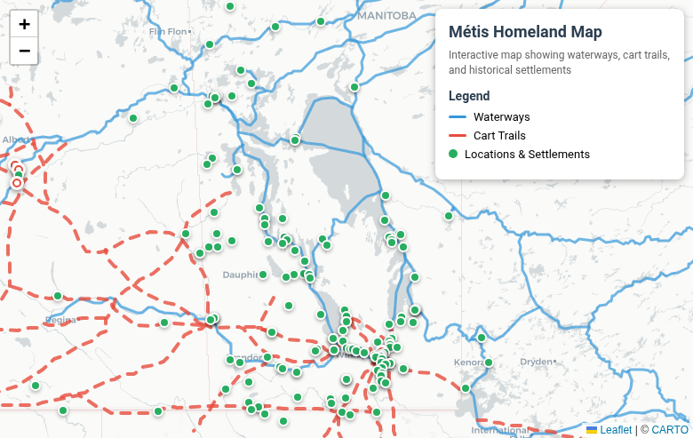

Shoebox V2
Built end-to-end: software, metadata architecture, hardware procurement, and training. 302-photo archive with geolocation mapping, family tree browsing, and timeline views.
React Leaflet IndexedDBI work with what's given
Winnipeg, Manitoba
Leading a team, a team of teams, or managing a project solo — I'm genuinely good at shipping high-quality outcomes with whatever resources are available. 15+ years of building frameworks where none exist and delivering results under ambiguity.

Built end-to-end: software, metadata architecture, hardware procurement, and training. 302-photo archive with geolocation mapping, family tree browsing, and timeline views.
React Leaflet IndexedDB
Interactive Métis territory visualization with settlement patterns, migration routes, and cultural sites. Buffalo herd overlays and historical transition animations.
D3.js GeoJSON Leaflet
Narrative-driven historical game exploring the Métis journey West and back. d20 system, 32-color pixel art, Made Beaver economy, and branching storylines.
TypeScript Canvas Pixel Art